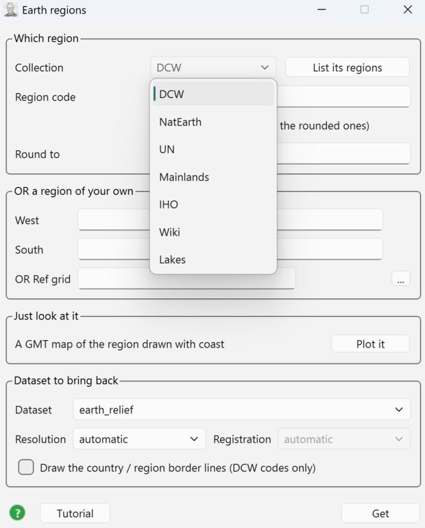
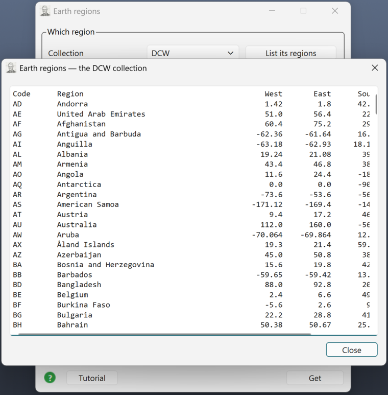
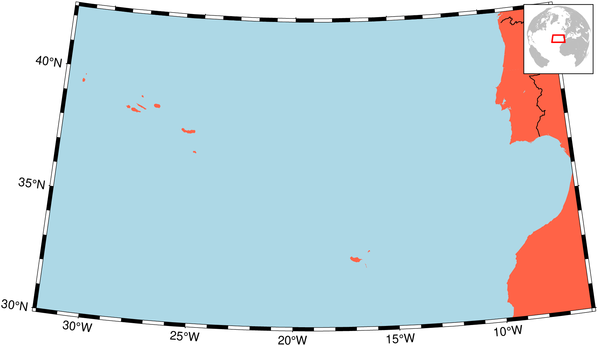
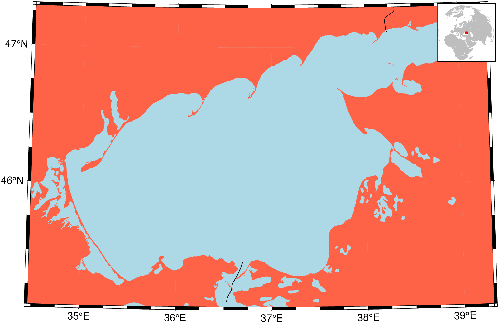
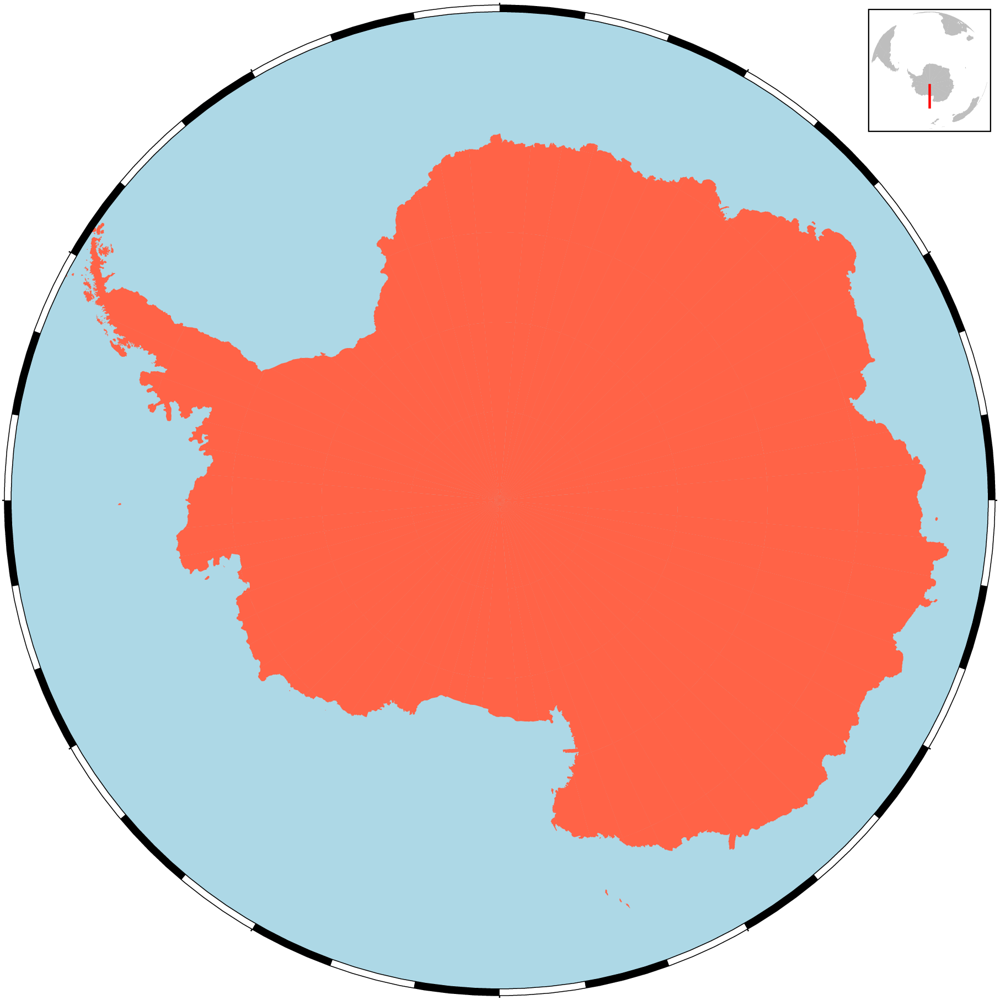
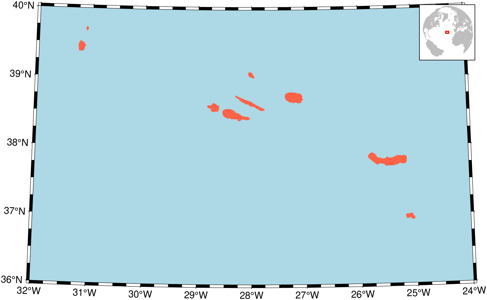
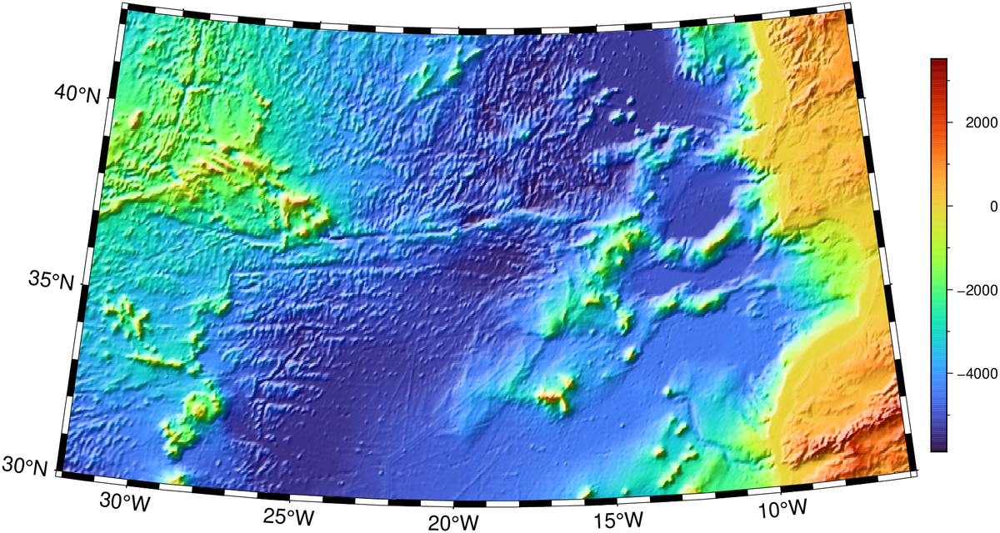

Earth Regions
Tools → Earth regions
A named region — a country, an ocean, a mountain belt, a lake — instead of four numbers typed by hand. The tool wraps GMT.jl's earthregions, which knows seven collections of named regions and what their boundaries are, and it does three things with them:
| You want | Press | What you get |
|---|---|---|
| To know which regions exist | List its regions | A table of codes, names and boundaries, in a window you can pick a row from |
| A picture of the region | Plot it | A GMT map, drawn with coast, in its own window — nothing enters the 3-D scene |
| The data over the region | Get | A grid or an image from GMT's remote datasets, added to the window as a new layer |
Everything about what a region is — which codes exist, where their limits are, the rounded versus exact boundaries — comes from GMT.earthregions. The dialog never keeps a second copy of that knowledge.
The dialog, block by block

Four blocks, top to bottom: Which region (the collection and the code), OR a region of your own (four boxes that take the code's place), Just look at it (the map), and Dataset to bring back (what Get fetches). Tutorial at the bottom-left opens this page; the green ? disk beside it opens GMT's own coast manual page.
Which region
Collection picks one of the seven lists GMT knows:
| Collection | Holds |
|---|---|
DCW | Countries and territories (255 of them), plus continents |
NatEarth | Continents, mountain belts, plains, plateaus, basins |
UN | The United Nations geoscheme regions |
Mainlands | Continental parts of countries that also have islands |
IHO | The International Hydrographic Organization's seas and oceans |
Wiki | Regions in common use that no official body defines |
Lakes | Large lakes and large islands |
List its regions prints the chosen collection as a table — here the DCW one, all 255 countries and territories:

The window opens as wide as the widest row, so all six columns — code, name, West, East, South, North — are on screen without dragging; 255 rows scroll vertically. The smaller collections fit whole; Mainlands, for instance, is four rows:
Code Region West East South North
CRC Continental Costa Rica -85.9506 -82.5561 8.0329 11.2167
ECC Continental Ecuador -81.0788 -75.1848 -4.9988 1.4389
PTC Continental Portugal -9.56 -6.18 36.955 42.16
ESC Continental Spain -9.2909 4.315 35.1852 43.7915The table is a chooser, not just a readout: double-click a row and its code goes into the Region code box while its four boundaries go into the Region block below. The listing closes behind the pick.
Typing a code by hand does the same thing — its limits appear in the Region boxes the moment you leave the box (Enter, or clicking elsewhere). Nothing is fetched by that; it is a lookup.
For the DCW collection a comma-separated list works too: PT,ES,FR is one region covering all three.
Exact GMT limits — the collections carry boundaries rounded to friendlier numbers. Tick this to use GMT's own strict limits instead.
Round to — enlarge the boundaries to whole multiples of a step. A number (1), two (1/0.5), four (1/1/0.5/0.5), or one of GMT's own +r / +R / +e strings, passed through verbatim. The step is GMT's, not ours — what the box does is append a +r to the -R the collection lookup produced, and GMT enlarges the box itself:
| Round to | What PT sends | Meaning |
|---|---|---|
| empty | -R-32/-6/30/42.4 | the collection's own boundaries, untouched |
1 | -R-32/-6/30/42.4+r1 | out to whole degrees, both axes |
1/0.5 | -R-32/-6/30/42.4+r1.0/0.5 | 1° in longitude, 0.5° in latitude |
1/1/0.5/0.5 | -R-32/-6/30/42.4+r1.0/1.0/0.5/0.5 | West/East/South/North, one step each |
+R2 | -R-32/-6/30/42.4+R2 | GMT's own modifier, passed through whole |
Anything else — x, 1/x — is refused here, before GMT sees it. And note the code: PT is Portugal including the Azores and Madeira, which is why its West is −32°; the continental box is PTC, in the Mainlands collection.
Rounding and the four Region boxes do not mix: with a +r step in play a code no longer resolves to four plain numbers, so the boxes stay empty and say so rather than showing you 42.4+r1.
OR a region of your own
Four boxes — West, East, South, North. Filled in, they take the place of the code: the data are fetched over exactly that box. Leave them empty to use the code. All four or none; three numbers is not a box.
The block also carries the standard Ref grid row: point it at a grid on disk and its limits fill the four boxes.
Just look at it
Plot it draws the region as a GMT figure and opens it in a window of its own. Nothing is downloaded, nothing is added to the 3-D scene, and the "Dataset to bring back" block is not used.
Dataset to bring back
Dataset is one of GMT's remote datasets — earth_relief, earth_gebco, earth_age, earth_day, mars_relief, … — Resolution is either automatic (GMT sizes it to the region) or one of the fixed steps, and Registration (gridline or pixel) can only be asked for together with a resolution.
Which dataset/resolution pairs actually exist is GMT.jl's rule, not a second table here: an impossible pair comes back as the module's own refusal, in the Messages window.
Draw the country / region border lines puts the DCW outline of the code on top of what was fetched, as a vector overlay. Only the DCW collection has border polygons, and only a code names one — four coordinates name no country.
Get brings the data in. A grid arrives as a new grid layer, an image as an image layer, both through the same doors a dropped file uses.
Worked examples
1. A country, as a map
Type PT in Region code, press Plot it.

What you are looking at:
- the projection, the land and sea colours and the frame are GMT.jl's own choices for that region — the tool asks
earthregionswhatcoastcommand it would run and runs exactly that; - national boundaries (
-N1) are drawn on top; - the locator globe in the top-right corner is an orthographic hemisphere centred on the region, with the region's own box outlined in red.
2. The same country, with its border drawn
Tick Draw the country / region border lines, press Plot it again.
The tick adds -EPT+p0.5 to the command: the DCW polygon of that code, stroked. It works for a code out of the DCW collection (PT, or PT,ES,FR), not for the four coordinate boxes.
3. A sea, not a country
Collection IHO → List its regions → double-click IHO31, or type the code. Press Plot it.

The IHO collection is the reason the region list is worth browsing: sea and ocean limits are exactly the boundaries nobody remembers.
4. A polar region
Type AQ (Antarctica), press Plot it.

A region that reaches a pole is drawn on a polar stereographic projection, centred on the pole it touches. Its longitude span is the whole planet, so the red box on the locator globe collapses to a line — the globe is still telling you which hemisphere you are on.
5. A region of your own
Leave Region code empty, fill the four boxes — say -32 / -24 / 36 / 40 for the Azores — and press Plot it.

With the boxes filled, the code is not consulted at all. The four numbers are the region.
6. Bringing the data in
Back to PT. In Dataset to bring back choose earth_relief, resolution 02m, and press Get.

The grid arrives in the 3-D window as a new layer named after the region and what was asked for — PT (earth_relief 02m) — so asking twice for the same thing is recognised before anything is downloaded, and the second press costs nothing.
earth_day and earth_night are images, not grids, and they are not tiled on the server: the first use downloads the whole file. They also require a resolution to be named.
The figure window
The window that Plot it opens is not just a viewer:
- Save… writes the figure to a file of your choosing. It copies the bytes GMT wrote, so the saved PNG is the figure — nothing is re-encoded on the way out.
- GMT command shows the GMT.jl that produced it, in two steps: the dry run that resolved the region, then the
coastcall that drew the map. It is a working script — copy it into a REPL and take the figure further than this dialog can:
cmd = GMT.earthregions("PT"; country = true, round = 0, exact = false, show = false, Vd = 2)
# -> pscoast -EPT+p0.5 -Vq -R-32/-6/30/42.4 -JD-19/36.2/32.0667/44.4667/15c -Baf -BWSen -Gtomato -Slightblue -Da
coast(
R = "-32/-6/30/42.4",
proj = "D-19/36.2/32.0667/44.4667/15c",
B = "af WSen",
G = "tomato",
S = "lightblue",
N = "1/0.5p",
E = "PT+p0.5",
D = "a",
inset = (coast = GMT.coast, R = "d", proj = (name = :ortho, center = (-19.0, 36.2)),
land = :gray, water = :white, area = 5000, rect = (:red, 1.0),
pos = (anchor = :TR, offset = 0, width = "1.8/1.8")),
show = false, savefig = "portugal.png"
)Where things go wrong
| Message | What it means |
|---|---|
Could not find the code 'XX' in any of the collections | The code is not in any list. Press List its regions and look. |
Give all four Region boxes, or leave them all empty | Three of four boxes are filled. |
the border lines need a country code | The border tick is on but only coordinates were given. |
a registration can only be asked for together with a resolution | Pick a resolution, or set Registration back to automatic. |
maximum available resolution for this dataset is … | GMT's own refusal; that dataset does not go that fine. |
Failures land in the Messages window (the speech-bubble button in the status bar's right corner, which grows a red dot when something goes wrong). Notices — "already in this window; nothing was downloaded" — go to the same log without raising the dot.
Where the pieces live
| Piece | File |
|---|---|
| The dialog | deps/ui/earthregions_dialog.ui, EarthRegionsDialog in deps/src/70_window.cpp |
| The work | src/earthregions.jl |
| The region knowledge | GMT.earthregions, GMT.jl src/pscoast.jl |